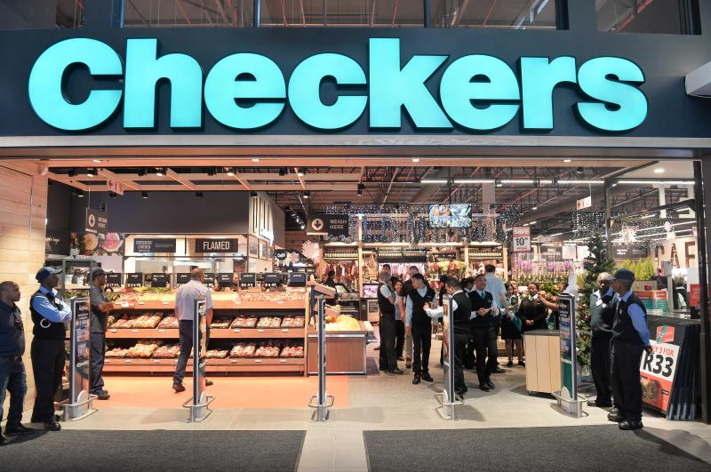
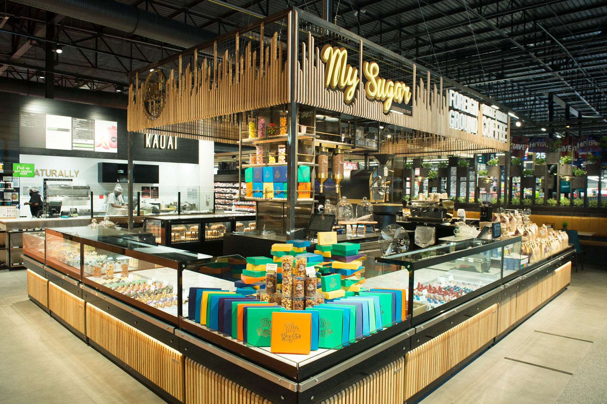
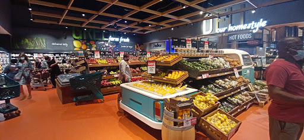

Checkers is a FMCG retailer owned by Shoprite that operates in Southern Africa. Checkers currently has 37 Checkers Hypers and 202 Checkers supermarkets operating in Botswana, South Africa, and Namibia. The supermarket chain focuses more strongly on fresh produce and offers a wider range of choice food items to a more affluent clientele (LSM 8-10). Norman Herber, the chair of Greatermans department stores, was the founder of Checkers. The firm was later expanded and made successful by Raymond Ackerman. The Checkers supermarket chain is part of the Shoprite Group.
Checkers: Supermarkets which are being constantly improved and aligned to healthy eating and cleaner living.
Checkers Hyper: Larger format store with a wider range than the supermarkets. This includes food, household items, clothing, video games, etc.
Checkers Liquor Shop: Sells Liquor
WHERE TO FIND US
@@NorthEast corner of the Mall
  